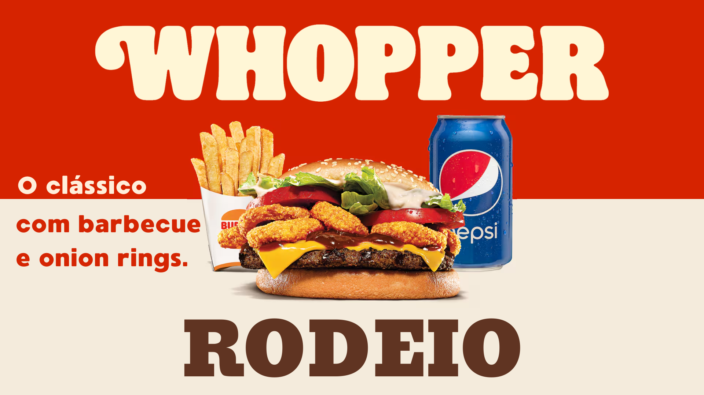

AGENDA ALICE
Estudo de agenda aberta com link para marcação de consulta.

BANNER ACADEMIA
Estudo de banner para academia, oferecendo oferta de desconto.

BANNER GPIZZARIA
Estudo de banner para empresa de delivery de pizza.

MOTION BURGUER KING
Estudo motion design para marca de lanches(link ao clicar na imagem).

2M BRONZE
Trabalho, dia do cliente para empresa de bronze.
PEACEKEEPER
Trabalho para o exército, comemoração do dia do peacekeeper.